您好,Quarto
概述
Quarto 是 Posit 推出的 R Markdown 的多语言next-generation版本，包含数十种新特性和功能，同时无需修改即可呈现大多数现有 Rmd 文件。
在本教程中，我们将向您展示如何将 RStudio 与 Quarto 结合使用。 您将在 RStudio 中编辑代码和标记符，就像在任何计算文档（如 R Markdown）中一样，并在工作时在 Viewer tab选项卡中预览渲染后的文档。
下面是扩展名为 .qmd（左侧）的 Quarto 文档，以及它的 HTML 渲染版本（右侧）。 您也可以选择将其渲染为 PDF、MS Word 等其他格式。

这就是 Quarto 发布的基本模式–获取源文档并将其呈现为各种输出格式。
如果您想在深入学习本教程之前观看 Quarto 视频介绍，请观看Get Started with Quarto，在这里您可以预览使用可执行代码块编写 Quarto 文档、渲染为多种格式（包括 revealjs 演示文稿）、创建网站以及在 QuartoPub 上发布的过程。
如果您想在自己的环境中学习本教程，请按照以下步骤操作。
下载并安装 RStudio 的最新版本（v2023.12）：
确保已安装
tidyverse和palmerpenguins软件包：install.packages("tidyverse") install.packages("palmerpenguins")下载下面的 Quarto 文档 (
.qmd)，在 RStudio 中打开它，然后点击 渲染.
渲染.
渲染
使用 RStudio IDE 中的  Render按钮，只需单击或使用键盘快捷键 (⇧⌘K) 即可渲染文件并预览输出。
Render按钮，只需单击或使用键盘快捷键 (⇧⌘K) 即可渲染文件并预览输出。

如果希望在保存时自动渲染，可以选中编辑器工具栏上的 “Render on Save” 选项。 只要重新渲染文档，预览就会更新。 并排预览适用于 HTML 和 PDF 输出。

请注意，也可以通过 quarto 软件包从 R 控制台( console)渲染文档：
install.packages("quarto")
quarto::quarto_render("hello.qmd")渲染时，Quarto 会生成一个新文件，其中包含从 .qmd 文件中选择的文本、代码和结果。 新文件可以是 HTML、PDF、MS Word、presentation、website、book、Interactive document或other format。
创作
在下图中，我们可以看到 RStudio 编辑器两种模式下的同一文档：可视化（左侧）和源代码（右侧）。 RStudio 的visual editor为 markdown 提供了WYSIWYM的编辑体验。 您可以使用工具栏、键盘快捷键（⌘B）或标记符结构（**bold**）来进行格式化（如加粗文本）。 文档的纯文本源代码是为你编写的，你可以随时切换到源代码模式进行编辑，从而查看/编辑源代码。 你可以通过点击编辑器工具栏上的 Source 和Visual（或使用键盘快捷键⌘⇧ F4）在这两种模式之间来回切换。

接下来，让我们来看看 Quarto 文档的内容。 该文件包含三种类型的内容：YAML 标头、代码块和 markdown 文本。
YAML 头文件
一个 YAML 标头（可选），两端用三个破折号 (---) 分隔。
---
title: "Hello, Quarto"
format: html
editor: visual
---渲染时，“标题” “你好，Quarto”将出现在渲染文档的顶部，字体大小比文档的其他部分大。 其他两个 YAML 字段表示输出应为 “html”格式，默认情况下文档应在 “可视”编辑器中打开。
YAML 的基本语法使用 “key: value” 格式的键值对。 文档标题中常见的其他 YAML 字段包括 “作者”、“副标题”、“日期”等元数据，以及 “主题”、“字体颜色”、“字体宽度”等自定义选项。 您可以在 [here]（/docs/reference/formats/html.html”此处”）了解 HTML 文档的所有可用 YAML 字段。 可用的 YAML 字段因文档格式而异，例如，PDF 文档的 YAML 字段请参见 here，MS Word 文档的 YAML 字段请参见 here。
代码块
用 {r} 标识的 R 代码块，带有 YAML 风格的（可选）块选项，行首用 #|标识。
```{r}
#| label: load-packages
#| include: false
library(tidyverse)
library(palmerpenguins)
```在本例中，代码块的 “标签”是 “load-packages”，我们将 “include”设为 “false”，表示我们不希望在渲染的文档中出现代码块本身或其任何输出。
除了渲染完整文档以查看代码块的结果外，还可以在 RStudio 编辑器中通过点击  图标或键盘快捷键（⇧⌘⏎）交互式运行每个代码块。 RStudio 会执行代码，并根据您的偏好在文件内嵌或控制台中显示结果。
图标或键盘快捷键（⇧⌘⏎）交互式运行每个代码块。 RStudio 会执行代码，并根据您的偏好在文件内嵌或控制台中显示结果。

Markdown text
格式化文本，包括章节标题、超链接、内嵌图片和代码块。

Quarto 对文本使用 markdown 语法。 如果使用visual editor可视化编辑器，你不需要学习太多的 Markdown 语法来编写文档，因为你可以使用菜单和快捷键来添加标题、加粗文本、插入表格等。 如果使用源代码编辑器，则可以使用##、**粗体**等标记表达式来实现这些功能。
如何工作
在渲染 Quarto 文档时，knitr 首先会执行所有代码块，并创建一个新的 markdown (.md) 文档，其中包括代码及其输出。
然后，pandoc 对生成的标记符文件进行处理，创建最终格式。 Render（渲染）按钮封装了这些操作，并按照正确的顺序执行。

下一步
您现在已经了解了创建和创作Quarto文档的基础知识。以下教程更深入地探讨了Quarto：